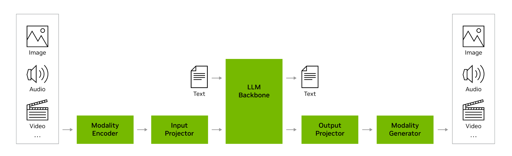
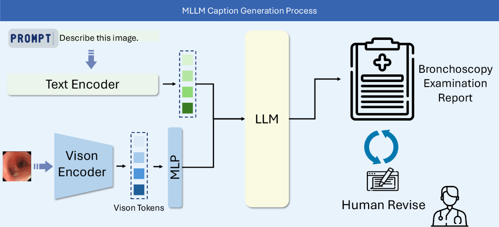
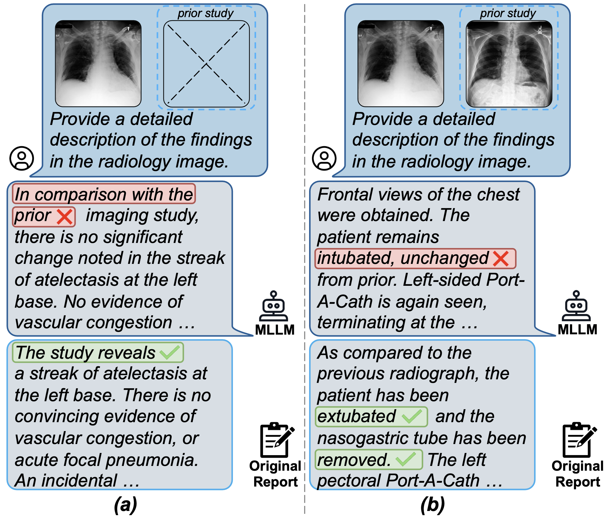
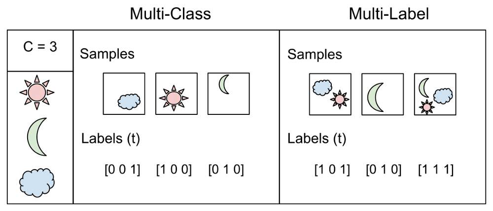

Module 01
Background
Introduction to MLLM + clinical applications.
Introduction to MLLM
MLLM emphasizes the alignment of latent spaces between different modalities. We are extremely familiar with the classic encoder–decoder networks like UNet - so it is very intuitive that we can merge multiple encoders and decoders in different combinations to perform different types of tasks.
Based on the input and output modalities, we can classify MLLMs into categories like the ones on the right. Hugging Face also uses these categories.
MLLM task categories
- Audio-text-to-text
- Image-text-to-text
- Image-text-to-image
- Image-text-to-video
- Video-text-to-text
- Any-to-any
Recall the training process of a naive UNet. It is essentially training a pair of mappings: encoder (input → latent) and decoder (latent → output). The optimization process is inherently stochastic, which makes the latent space nondeterministic across trials. Therefore, two independently trained encoders and decoders do not share the same latent space. To align them, there are several approaches, shown below.
LLaVA-style
Align vision features to an existing LLM
BLIP-2-style
Compress vision through learned queries
Flamingo-style
Inject vision through cross-attention
Kosmos-style
Train a unified multimodal autoregressive model

Figure credit: NVIDIA. (n.d.). Multimodal large language models. NVIDIA Glossary. Retrieved from nvidia.com/en-us/glossary/multimodal-large-language-models · Extended reading: Multimodal Large Language Models - NVIDIA
Clinical applications of MLLMs
MLLMs are powerful in a clinical workflow for perception, reasoning, documentation, triage, and patient-facing support.
Below are five concrete clinical applications (CAs), each illustrating one way an MLLM slots into practice.
CA1Report generation
In a report generation task, the MLLM:
- Reads X-ray, CT, MRI, ultrasound, or PET images
- Drafts findings and impression
- Speeds up reporting, helps standardize language, and may reduce missed findings

Figure credit: Luo, X., Huang, X., Liang, X. et al. Towards Automated Reporting: A Bronchoscopy Report Dataset for Enhancing Multimodality Large Language Models. Sci Data 13, 339 (2026). doi.org/10.1038/s41597-026-06692-8
CA2Longitudinal comparison
In a longitudinal comparison task, the MLLM:
- Compares current and prior studies
- Detects disease progression, treatment response, or interval change

Figure credit: Zhang, X., Meng, Z., Lever, J., & Ho, E. S. (2025, July). Libra: Leveraging temporal images for biomedical radiology analysis. In Findings of the Association for Computational Linguistics: ACL 2025 (pp. 17275–17303). doi.org/10.48550/arXiv.2411.19378
CA3Multi-class classification
In a multi-class classification task, the MLLM outputs one label for several classes. It is the same as naive classification, but with outputs in the form of text - we use string parsers to convert the textual class ids into integers. Some common clinical examples are BI-RADS category, tumor subtype, disease stage, and dermatology diagnosis category.

Figure credit: Wikipedia - Cat (Cat_August_2010-4.jpg)
CA4Multi-label classification
In a multi-label classification task, the MLLM outputs multiple labels at once. Common clinical examples include chest X-ray findings: edema, consolidation, atelectasis, cardiomegaly, and pleural effusion.

Figure credit: Sharma, G. (2021, February 7). Multi-label classification. Medium; Analytics Vidhya. medium.com/analytics-vidhya/multi-label-classification
CA5Regression
In a regression task, the MLLM outputs a continuous value. It is the same as naive regression, but with outputs in the form of text - we use string parsers to convert the strings into floats. Some common clinical examples are ejection fraction, tumor size, organ volume, lab value prediction, risk score, and survival time.
Figure credit: Wikipedia - Cat (Cat_August_2010-4.jpg)
Course setup
In this mini course, we are going to use MedGemma 1.5 4B as an example. The MedGemma family consists of LLaVA-style vision-language models (VLMs) designed for image-text-to-text tasks, specialized in medical images.
Throughout the mini course, we will be learning hands-on examples with MedGemma 1.5, covering a complete pipeline for the report generation task using the FLARE-MLLM-2D dataset.
The hands-on pipeline
- Data preparation
- Fine-tuning
- Inference
- Evaluation
Dataset: FLARE-MLLM-2D · Model: MedGemma 1.5 4B